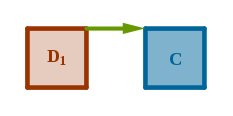
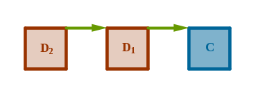
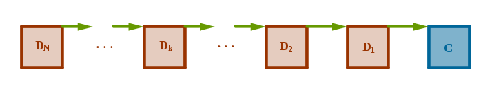
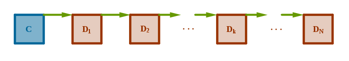

Decorator may be used to add responsibilities to a data type without changing its interface.
Let us name a data type that is given additional responsibilities a component.
Let us name a data type that implements the additional responsibilities a decorator.
As a data type, component should possess the ability to attach multiple similar but different implementations to a single interface (see Factory chapter) which, in turn, should provide the ability to implement a multitude of decorators.
Collectively the number, order and type of decorators that may be attached to a component at either compile or run time are arbitrary.
A decorator should implement its component's interface in its entirety so that to a side observer a decorator looks like a component. However, underneath a decorator may exhibit an arbitrary behavior which may be totally unrelated to component's functionality. It follows then that Decorator allows multiple unrelated tasks to be performed through a single interface.
Decorator's operation is based on chaining concrete decorators together at compile or run time via author-supplied interface. In such a chain a component may be located at its either extremity or anywhere inside it. The nature of a component or operation applied to a component determines the appropriate formation. We will examine component-terminated and component-originated chains.
To support the above chaining each decorator maintains a pointer to the next decorator/component as its state variable. An arbitrary number of decorators thus connected, in memory at run time, resembles a singly-linked list. Further, each decorator, while implementing a given function of its component, has an opportunity to:
- perform an arbitrary task before invoking a function of the next decorator/component in a chain that has the same name
- invoke a function of the next decorator/component in a chain that has the same name
- perform an arbitrary task after invoking a function of the next decorator/component in a chain that has the same name
- perform an arbitrary task that is totally unrelated to the current functionality thus completely overriding its behavior
The invocation of a function that has the same name by a multitude of decorators in a chain triggers a form of recursion which may be terminated either by a decorator/component whose pointer to the next decorator/component is null or by a decorator/component that will explicitly not invoke the corresponding function of the next decorator/component in a chain.
For the following demonstration assume that:
1) \(C\) is a component
2) \(D_1, D_2, \dots, D_N\) are decorators of \(C\) and, for consistency sake, \(D_0 \equiv C\)
3) each decorator/component stores the address of the next decorator/component in a nextDecorator state variable initialized to null at creation time
4) setNextDecorator( \(V_1\), \(V_2\) ) acts relative to \(V_1\) by recording the address of \(V_2\) in a state variable of \(V_1\)
5) component \(C\) has a Print() function (in pseudo-code):
Print( \(C\) ) { printf( "Anterior work of \(C\)\n" ); if ( \(C \rightarrow \) nextDecorator ) { Print( \(C \rightarrow \) nextDecorator ); } printf( "Posterior work of \(C\)\n" ); }
6) decorators \(D_i, i \in [1, N],\) implement their versions of Print() as follows:
Print( \(D_i\) ) { printf( "Anterior work of \(D_i\)\n" ); if ( \(D_i \rightarrow \) nextDecorator ) { Print( \(D_i \rightarrow \) nextDecorator ); } printf( "Posterior work of \(D_i\)\n" ); }
Component-Terminated Chains
To form a component-terminated chain invoke setNextDecorator() as follows:
$$setNextDecorator(\; D_{k+1},\; D_k \;)$$where \(k \in [0, N[\).
Since the order of invocations of setNextDecorator() does not matter, only the order of parameters to that function does, let us construct a \(C\)-terminated chain of decorators by first attaching \(C\) to \(D_1\):
$$setNextDecorator(\; D_1,\; C \;)$$Technically \(C\) is an actual component - not a decorator but for consistency sake, semantically, we treat it as such.
After the above function call, \(D_1\) will record \(C\)'s address and the two will form the following chain (in memory at run time):
To exercise just \(C\)'s functionality invoke Print() as follows:
$$Print(\; C \;)$$which will generate one function call to Print() producing the following output:
Anterior work of \(C\) Posterior work of \(C\)
To exercise the decorated functionality of the entire chain invoke Print() as follows:
$$Print(\; D_1 \;)$$which will generate two function calls to Print() producing the following output:
Anterior work of\(D_1\) Anterior work of \(C\) Posterior work of \(C\) Posterior work of\(D_1\)
To make \(D_1\) the next decorator of \(D_2\) invoke setNextDecorator() as follows:
$$setNextDecorator(\; D_2,\; D_1 \;)$$After the above function call, \(D_2\) will record \(D_1\)'s address extending the existing chain (in memory at run time) as follows:
To exercise the decorated functionality of the entire chain invoke Print() as follows:
$$Print(\; D_2 \;)$$and so on. Consequently, after \(N\) invocations of setNextDecorator() in the above fashion decorators will form the following chain (in memory at run time):
To exercise the decorated functionality of the entire chain invoke Print() as follows:
$$Print(\; D_N \;)$$To exercise the decorated functionality of a partial chain starting at an arbitrary position \(i\) inside the chain invoke Print() as follows:
$$Print(\; D_i \;)$$
Component-Originated Chains
To form a component-originated chain invoke setNextDecorator() as follows:
$$setNextDecorator(\; D_k,\; D_{k+1} \;)$$where \(k \in [0, N[\).
Since the order of invocations of setNextDecorator() does not matter, one way to construct a \(C\)-originated chain of decorators is as follows:
$$setNextDecorator(\; C,\; D_1 \;)$$ $$setNextDecorator(\; D_1,\; D_2 \;)$$ $$setNextDecorator(\; D_2,\; D_3 \;)$$ $$setNextDecorator(\; D_k,\; D_{k+1} \;)$$ $$setNextDecorator(\; D_{N-1},\; D_N \;)$$The above sequence of function calls will generate the following chain of decorators (in memory at run time):
To exercise the functionality of this type of chain invoke Print() as follows:
$$Print(\; C \;)$$
We observe in passing that another way to form the above types of chains is
to construct an arbitrary chain of decorators only and then attach the actual
component to that chain as its head or tail.
The Decorator pattern consequences:
Sample Problem
Add the ability to rotate strings to bio_t from Factory chapter.
Generic Solution Description
1) Implement a component as a data type that possesses the ability to attach a multitude of similar but different implementations to a single interface (see Factory chapter).
2) Add setNextDecorator() and getNextDecorator() functions to component's public interface.
3) Implement a decorator as a data type of a component.
4) Implement the above set/get functions across all the component's concrete data types including those that represent decorators.
5) Choose the appropriate action to take in the decorator's version of the corresponding component's function.
Sample Solution
Step 1
Borrow the relevant files from Factory chapter.
Step 2
Add set/getNextDecorator() functions to I/O Factory's public libbio.h header file:
#include <sys/types.h> typedef struct bio { int ( *open )( struct bio*, const char* ); ssize_t ( *read )( struct bio*, void*, size_t ); ssize_t ( *write )( struct bio*, void*, size_t ); int ( *close )( struct bio* ); const char* ( *name )(); size_t ( *sizeOf )(); struct bio* ( *setNextDecorator )( struct bio*, struct bio* ); struct bio* ( *getNextDecorator )( struct bio* ); void ( *destruct )( struct bio* ); } bio_t; extern bio_t* bioNew( const char* ); extern void bioDelete( bio_t** ); extern bio_t* bioConstruct( void*, const char* ); extern void bioDestruct( bio_t* ); extern size_t bioSizeOf( const char* ); extern int bioOpen( bio_t*, const char* ); extern ssize_t bioRead( bio_t*, void*, size_t ); extern ssize_t bioWrite( bio_t*, void*, size_t ); extern int bioClose( bio_t* ); extern const char* bioName( bio_t* ); extern size_t biosizeof( bio_t* ); extern bio_t* bioSetNextDecorator( bio_t*, bio_t* ); extern bio_t* bioGetNextDecorator( bio_t* );
Step 3
Implement the new pair of functions in libbio.c:
extern bio_t* bioSetNextDecorator( bio_t* bio, bio_t* nextDecorator ) { bio_t* rv; rv = bio->setNextDecorator( bio, nextDecorator ); return rv; } extern bio_t* bioGetNextDecorator( bio_t* bio ) { bio_t* rv; rv = bio->getNextDecorator( bio ); return rv; }
Step 4
Implement the corresponding pair of new functions for all the existing I/O data types: file, tcpipv4 and tcpipv6 by adding an extra state variable nextDecorator of type bio_t* to each implementation data type treating it as a non-integral rented part (see Non-integral Parts chapter).
Our sample bioSetNextDecoratorFile() version below returns the address of the soon to be old next decorator.
libbiofile.c:
static bio_t* bioSetNextDecoratorFile( bio_t* bio, bio_t* nextDecorator ) { bio_t* rv; biofile_t* file = ( biofile_t* )bio; rv = file->nextDecorator; file->nextDecorator = nextDecorator; return rv; }
Step 5
Implement a string-rotating decorator as biosr_t data type incorporated into I/O Factory.
Select this data type via "sr" human-readable null-terminated C string and implement it in libbiosr.c file.
Concentrating on Decorator's mechanics proper we will not show the remaining details of adding a new data type to a factory - finish this step on your own, consult Factory chapter if needed.
Step 6
Implement the string-rotating decorator proper.
We observe that our I/O data type has four public functions that justify its existence: open(), read(), write(), close(). In two of these functions, open() and close(), a string rotator has no meaningful task to perform.
To keep the potential flow of open() and close() invocations uninterrupted make our string rotator forward these function calls to their next decorator's equivalents.
libbiosr.c:
static int bioOpenSR( bio_t* bio, const char* adrs ) { int rv = 0; biosr_t* sr = ( biosr_t* )bio; if ( sr->nextDecorator ) { rv = bioOpen( sr->nextDecorator, adrs ); } return rv; } static int bioCloseSR( bio_t* bio ) { int rv = 0; biosr_t* sr = ( biosr_t* )bio; if ( sr->nextDecorator ) { rv = bioClose( sr->nextDecorator ); } return rv; }
Step 7
In the remaining two public I/O functions, read() and write(), our string-rotating decorator has a meaningful task to perform.
Exactly where in reference to the next decorator's/component's read()/write() such a task is performed depends on the nature of the task and the type of the chain - component-terminated or component-originated.
Since we do not store the chain type as a state, we will make the above decision at keyboard time. For example, we will construct component-terminated chains in the sample program below. From the demonstration section at the beginning of this chapter it follows that the string rotator's read() will be invoked before the component's read(). Further, we make a decision to perform the task of rotating a string after component's read() returns delivering the bytes to act upon. Purely for brevity sake we call this type of work posterior.
libbiosr.c:
static ssize_t bioReadSR( bio_t* bio, void* b, size_t bsz ) { size_t n = 0; biosr_t* sr = ( biosr_t* )bio; if ( sr->nextDecorator ) { n = bioRead( sr->nextDecorator, b, bsz ); rotateString( ( char* )b, n ); } return n; }
Step 8
Implement the string rotator's version of write() which we will use in the sample program later on.
You should be able to reason your way through the following implementation and explain why it performs anterior work.
libbiosr.c:
static ssize_t bioWriteSR( bio_t* bio, void* b, size_t bsz ) { size_t n = 0; biosr_t* sr = ( biosr_t* )bio; if ( sr->nextDecorator ) { rotateString( ( char* )b, bsz ); n = bioWrite( sr->nextDecorator, b, bsz ); } return n; }
Step 9
Implement a function that rotates a string with respect to a vertical axis passing through its center such that "ABCD", for example, is transformed into "DCBA".
libbiosr.c:
static void rotateString( char* s, size_t n ) { char ch; size_t i; for ( i = 0; i < ( n / 2 ); i++ ) { ch = s[ i ]; s[ i ] = s[ n - i - 1 ]; s[ n - i - 1 ] = ch; } }
We observe in passing that rotating a string an even number of times restores it to its original content while rotating a string an odd number of times is equivalent to rotating it exactly once.
Step 10
Rebuild the I/O factory.
SLBTF:
gcc -D_GNU_SOURCE -g -c -fPIC -I . libbio.c gcc -g -c -fPIC -I . libbiofile.c gcc -g -c -fPIC -I . libbiotcpipv4.c gcc -g -c -fPIC -I . libbiotcpipv6.c gcc -g -c -fPIC -I . libbiosr.c gcc -g -shared -o libbio.so \ libbio.o \ libbiofile.o \ libbiotcpipv4.o \ libbiotcpipv6.o \ libbiosr.o -ldl
MLBTF:
gcc -D_GNU_SOURCE -g -c -fPIC -I . libbio.c gcc -g -shared -o libbio.so libbio.o -ldl gcc -g -c -fPIC -I . libbiofile.c gcc -g -shared -o libbiofile.so libbiofile.o gcc -g -c -fPIC -I . libbiotcpipv4.c gcc -g -shared -o libbiotcpipv4.so libbiotcpipv4.o gcc -g -c -fPIC -I . libbiotcpipv6.c gcc -g -shared -o libbiotcpipv6.so libbiotcpipv6.o gcc -g -c -fPIC -I . libbiosr.c gcc -g -shared -o libbiosr.so libbiosr.o
MLRTF:
Add the -DIO_MLRTF option to the libbio.so library's build line:
gcc -D_GNU_SOURCE -DIO_MLRTF -g -c -fPIC -I . libbio.c
Step 11
Adjust the sample program to exercise Decorator pattern.
Our version:
- accepts one extra command line argument as decorator's name
- creates two bio_t variables, one component and one decorator
- invokes I/O functions with decorator as their argument
- exercises factory's getNextDecorator() interface by enumerating the members of the chain
bio.c:
#include <stdio.h> #include <stdlib.h> #include "libbio.h" extern int main( int argc, char* argv[] ) { const char* componentnm; const char* adrs; const char* decoratornm; bio_t* bio; bio_t* component; bio_t* decorator; char b[ 59 ] = { 0 }; size_t bsz = sizeof( b ) - 1; if ( argc != 4 ) { return -1; } componentnm = argv[ 1 ]; adrs = argv[ 2 ]; decoratornm = argv[ 3 ]; component = bioNew( componentnm ); decorator = bioNew( decoratornm ); bioSetNextDecorator( decorator, component ); bioOpen( decorator, adrs ); bioRead( decorator, b, bsz ); printf( "First %zu bytes:\n%s\n", bsz, b ); printf( "\nChain's members (name and address):\n" ); bio = decorator; while ( bio ) { printf( "\"%s\"\t%p\n", bioName( bio ), ( void* )bio ); bio = bioGetNextDecorator( bio ); } bioDelete( &component ); bioDelete( &decorator ); return 0; }
Step 12
Build the sample application:
SLBTF and MLRTF:
gcc -g -c -I . bio.c gcc -g -L . -o bio bio.o -lbio
MLBTF:
gcc -g -c -I . bio.c gcc -g -L . -o bio bio.o -lbio \ -lbiofile \ -lbiotcpipv4 \ -lbiotcpipv6\ -lsr
Step 13
Run the sample program with various inputs:
./bio file ./bio.c sr First 58 bytes: "h.oibbil" edulcni# >h.bildts< edulcni# >h.oidts< edulcni# Chain's members (name and address): "sr" 0x129b8070 "file" 0x129b8010
Exercises
1) Modify the sample program to also perform write()s of small arbitrary human-readable strings:
./bio w "Hello, world!" file ./hw sr
where the first option, "w", stands for writing, the second option is a small arbitrary human-readable string followed by I/O Factory type, followed by an address, followed by a decorator.
The sample program may perform the read()s as follows:
./bio r 13 file ./hw sr
where the first option, "r", stands for reading, the second option is the number of bytes to read followed by I/O Factory type, followed by an address, followed by a decorator.
Run the new sample program and compare the input, written and read strings.
2) Further, modify the sample program as follows: create a second decorator of the same type and construct a two-decorator:
$$D_{sr} \rightarrow D_{sr} \rightarrow C$$three-item chain.
Predict, obtain and verify the result of this modification.
3) Add the ability to change the case of an alphabetic character to its opposite to bio_t. For example, when this functionality is exercised A should be transformed into a and z should be transformed into Z and so on.
4) Adjust the sample program to accept up to two types of decorators from command line in an arbitrary order.
Vary the order of application of string-rotating and case-flipping decorators to a component at run time.
5) By distributing the single-case English alphabet along the circumference of a unit circle evenly it becomes possible to:
- encipher a given letter by rotating it by \(1 \leqslant k \leqslant 25\) positions in one direction
- decipher a given letter by rotating it by the same \(k\) positions in the opposite direction
thus preserving the letter's case while leaving the remaining input symbols unmodified.
For example, let \(k = 7\) and let a clear text letter be enciphered by rotating it clockwise, and let an enciphered letter be deciphered by rotating it counterclockwise.
Then, "Hello, world!" should be enciphered into "Olssv, dvysk!", before writing perhaps, and "Olssv, dvysk!" should be deciphered into "Hello, world!", after reading perhaps.
Pick your favorite encipher/decipher direction and a value for \(k\) and incorporate the above functionality as a new decorator into I/O Factory and the sample program which should now accept an arbitrary mix of up to three decorators.
Vary the order of application of decorators of all three types to a component at run time.
Files
libbio.h libbio.c libbiofile.c libbiotcpipv4.c libbiotcpipv6.c
libbiosr.c libbiocf.c libbioxc.c mklib.sh
\(\blacksquare\)